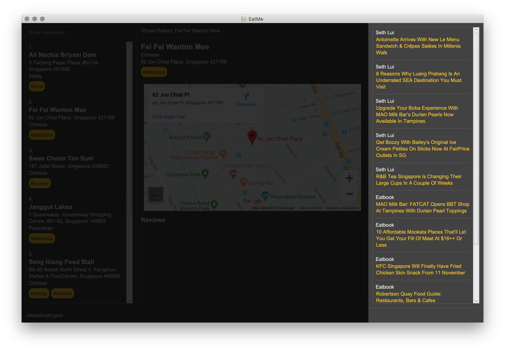
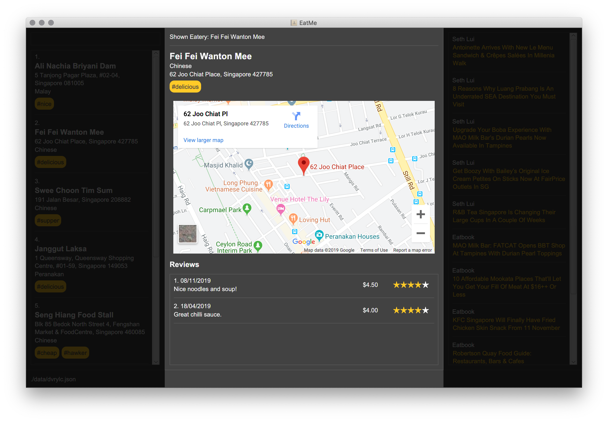

Overview
EatMe is a desktop food diary application used for keeping track of favorite places to eat. It also allows the user to easily stay up-to-date with the latest food trends. The user interacts with it using a CLI, and it has a GUI created with JavaFX. It is written in Java, and has about 10kLoC.
Summary of contributions
-
Code contributed: Code contributed
-
Major enhancement: Added the news feed feature
-
What it does: Allows the user to stay up-to-date with the latest food trends using a news feed. The user is able to customize the news feed to their liking by adding or removing their favorite food blogs from the list.
-
Justification: As people who really love food, users are constantly on the lookout for the latest and most interesting kinds of food to try. Users usually stay up-to-date by reading their favorite food blogs. However, if a user has multiple food blogs that they like, going to each blog individually can be time-consuming. As such, we wanted to build a feature that would allow the user to simply add their favorite food blogs to the app and have a list of the latest articles shown to them. To read any of the articles, the user simply has to click on the article to open it up in their browser. This feature would allow our app to be a one-stop solution for all of the user’s food content.
-
Highlights:
-
This feature was challenging to build because it fetches data from the RSS feeds of the user’s favorite food blogs. It involved research on how XML parsing can be done in Java, and a detailed analysis of how the news feed should behave when the user is offline.
-
The implementation was challenging as it required a solution to cache previously fetched articles, so that the user can still view the feed while offline.
-
-
Credits: Besides the JSoup library that was used for XML parsing, all other parts of the feature were self-written.
-
-
Major enhancement: Added the
showcommand-
What it does: Allows the user to view all the information about an eatery (name, address, category, tags and reviews) and shows the user an interactive map of the eatery’s location for easy navigation.
-
Justification: Since our app allows users to add reviews to an eatery, we needed a way to display the reviews in a simple and visually-pleasing way. Once the user finds an eatery to visit, it is also highly likely that they would need directions to the address. As such, we wanted to provide the user with an interactive map that they can use to navigate to the restaurant.
-
Highlights:
-
The existing AB3 GUI had to be morphed into a 3-column layout to allow for a larger result display that count accomodate the eatery’s information, the reviews and the interactive map.
-
In order for the map to be interactive, an analysis of the available map options also had to be conducted. I evaluated OpenStreetMaps and Google Maps, and decided to use Google Maps because it had a user interface that was more intuitive and familiar to the average user.
-
The implementation was challenging because we had to use JavaFX’s WebView and an embedded Google Map. This involved working with the Google Maps API and making API calls that are signed with a Google Maps API Key.
-
-
-
Minor enhancement: Add visual indicator for closed eateries
-
What it does: Highlights closed eateries in red.
-
Justification: When the user marks an eatery as "closed", it means that the eatery has closed down and is no longer operational. It is important that there is a visual indicator for the user to tell that the eatery is closed, so that the user doesn’t try to visit it.
-
Relevant PRs: #164
-
-
Other contributions:
-
Project management:
-
Managed releases
v1.1-v1.4(4 releases) on GitHub
-
-
Enhancements to existing features:
-
Documentation:
-
Community:
-
Tools:
-
Integrated a third party library (JSoup) to the project (PR #73)
-
-
Contributions to the User Guide
Given below are sections I contributed to the User Guide. They showcase my ability to write documentation targeting end-users. |
News Feed
EatMe allows you to stay up-to-date with the latest food trends from right within the app! Add your favorite food blogs into the app and EatMe will show you a list of the latest articles from those blogs on the right panel. To view any of the articles, simply click on the title of the post.
Terminology:
-
feed- A food blog -
feed post- A single post from a food blog
Adding a feed : addfeed
Adds a new feed to the app.
Format: addfeed \n [name of feed] \a [Web address of the feed]
Example:
-
addfeed \n Eatbook \a https://eatbook.com/feed
Deleting a feed : deletefeed
Deletes a feed from the app.
Format: deletefeed \n [name of feed]
Examples:
-
deletefeed \n Eatbook
Viewing an eatery: show
Shows an eatery with all its details - address, tags, reviews, and a map of its location.
Format: show [index]
Examples:
-
show 2
Contributions to the Developer Guide
Given below are sections I contributed to the Developer Guide. They showcase my ability to write technical documentation and the technical depth of my contributions to the project. |